5040A43 FAN (ONE) LEFT OR RIGHT FOR AIR CONDITIONING CONDENSER
- Path
- Procedures > 50 AUXILIARY UNITS > 5040 AIR CONDITIONING CASING AND COMPONENTS > 5040A CHECKING OPERATION OF AIR CONDITIONER (TEMPERATURE) > 5040A43 FAN (ONE) LEFT OR RIGHT FOR AIR CONDITIONING CONDENSER
- Kind
- repair procedure (removal / refitting; the operation number is the code)
- Applies to
- all engines; all production periods
- Interactive page
- https://sloeber94.github.io/elrnDB-fUlss/en/#/179021660
Applies to: engines: 2.0 16V JTD, 2.2 16V JTD; all production periods
 Removing
Removing
 Refitting
RefittingOp. 5530B56 BATTERY DRIP TRAY COVER - R.R.
- Disconnect the negative battery terminal.
1. Release the bonnet release control cable (1) from the bonnet lock (1b).
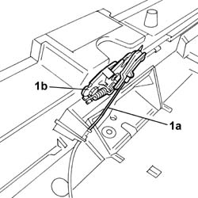
Applies to: all engines; all production periods
Dismantling
1. Fit the cylinder head support tool (1a) tightening the fixing nuts (1b).
2. Position the cylinder head in the vice.
Description | Code | Function | |
|---|---|---|---|
1a | Support | 1.860.470.000 | Head support |
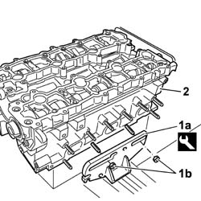
Applies to: engines: 2.0 16V JTD, 2.2 16V JTD; all production periods
1. Undo the fixing bolts (1a) and remove the front bumper grille (1b).
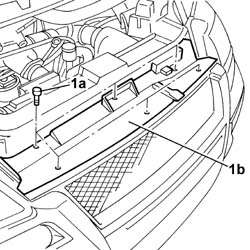
Applies to: all engines; all production periods
1. Rotate the camshaft pullies so that the opening (1a) in the actual pulley is aligned with the opening (1b) in the head; insert the retaining/timing pins (1c) through the openings.
Description | Code | Function | |
|---|---|---|---|
1c | Reaction/timing pins | 1.870.893.000 | Camshaft pullies retainer |
2. Undo the bolt (2a) fixing the exhaust camshaft pulley (2b), then remove it from the cylinder head.
3. Undo the bolt (3a) fixing the inlet side camshaft pulley (3b), then remove it from the cylinder head.
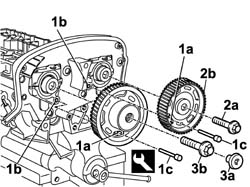
Applies to: engines: 2.0 16V JTD, 2.2 16V JTD; all production periods
1. Disconnect the electrical connection.
2. Undo the retaining bolts.
- Release the wiring from the retainers.
3. Remove the fan.
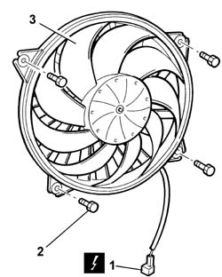
Applies to: all engines; all production periods
1. Undo the bolts (1a) fixing the timing drive belt rear guard (1b), then remove it from the cylinder head.
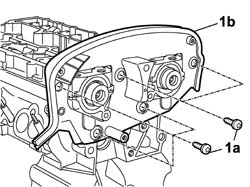
Applies to: all engines; all production periods
1. Undo the bolts (1a) and remove the inlet and exhaust side camshaft bearing caps (1b) single covers.
2. Remove the camshafts.
3. Remove the camshaft front oil seals.
4. Remove the hydraulic tappets.
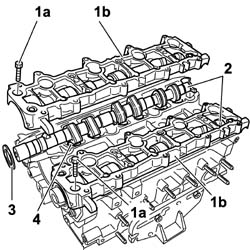
Applies to: engines: 2.0 16V JTD, 2.2 16V JTD; all production periods
Refitting
Removing- Position the fan and the wiring.
- Tighten the retaining bolts.
- Connect the electrical connection.
- Fit the front bumper grille and secure it using the bolts.
- Reposition the bonnet release control cable and secure it to the bonnet lock.
- Connect the negative battery terminal.
Applies to: all engines; all production periods
1. Remove the cotters (1a) using the tools (1b), (1c), (1d), (1e) and (1f).
Description | Code | Function | |
|---|---|---|---|
1c | Extension | 1.860.787.000 | - |
Description | Code | Function | |
|---|---|---|---|
1d | Lever hook | 1.860.788.000 | - |
Description | Code | Function | |
|---|---|---|---|
1e | Chamber | 1.870.890.000 | Lower tappets |
Description | Code | Function | |
|---|---|---|---|
1e | Chamber | 1.870.890.000 | Lower tappets |
Description | Code | Function | |
|---|---|---|---|
1f | Lever | 1.860.790.000 | - |
2. Remove the upper valve shim.
3. Remove the valve spring.
- Remove the tools used for dismantling the valves.
4. Remove the valve.
- Carry out the same operations for removing the remaining valves.
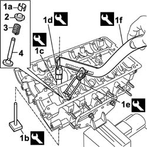
Applies to: all engines; all production periods
1. Remove the valve guide oil seal (1a) using the tool (1b).
Description | Code | Function | |
|---|---|---|---|
1b | Caliper | 1.870.894.000 | Valve guide oil seal extraction |
1.870.894.000, Valve guide oil seal extraction2. Remove the lower valve shim.
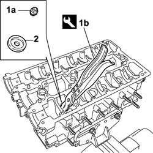
Applies to: all engines; all production periods
- Remove the cylinder head from the support tools and place it on a special workbench.
- Turn the cylinder head upsidedown on the workbench.
1. Remove the valve guides (1a) using the tool (1b).
Description | Code | Function | |
|---|---|---|---|
1b | Drift | 1.870.880.000 | - |
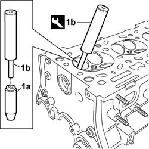
Applies to: all engines; all production periods
Reassembly
- Clean any residues of the old gasket from the lower cylinder head plane.
- Clean any residues of sealant from the upper cylinder head planes without using cutting tools that can damage the surface of the head.
1. Check that the flatness of the lower cylinder head plane corresponds to the recommended values.
Lower plane planarity (mm) | Validity |
0.05 |
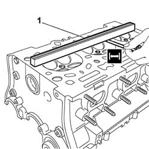
Applies to: all engines; all production periods
1. If the planarity of the lower cylinder head plane does not correspond to the recommended figures, regrind it without exceeding the minimum permitted height.
Cylinder head height (factory value) (mm) | Validity |
- ± - 0.2 |
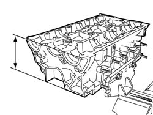
Applies to: all engines; all production periods
- Check that the valves do not show signs of grooves or seizing.
- Check that the diameter of the valve stems corresponds to the recommended figures; if not, replace the worn valves.
Exhaust valve stem diameter (mm) | Validity |
5.9775 ± 0.0075 | |
From the valve stem head (mm) | |
14.7 ± 1 |
Exhaust valve stem diameter (mm) | Validity |
5.9675 ± 0.0075 | |
From the valve stem head (mm) | |
72 ± 1 |
Valve head cylindrical section thickness (mm) | Validity |
> - |
- Check that the thickness of the cylindrical section of the valve head is within the recommended values.
Exhaust valve outer diameter (mm) | Validity |
30 ± 0.1 |
- Check that the diameter of the valve head corresponds to the recommended figures; if not, replace the valves.
Inlet valve outer diameter (mm) | Validity |
35 ± 0.1 |
Valve guide bore diameter in cylinder head (mm) | Validity |
- ÷ - |
- Check that the diameter of the hydraulic tappet housings corresponds to the recommended figures; if not, replace the cylinder head.
Height of spring (mm) | Validity |
43 | |
released daN | |
- |
- Check that the length of the valve springs released is within the recommended values.
Height of spring (mm) | Validity |
43 | |
Under a load of daN | |
23 |
- Using a torque wrench, check that the spring specifications correspond to the recommended figures; if not, replace the components that do not comply.
Height of spring (mm) | Validity |
25 | |
Under a load of daN | |
51 |
Camshaft bearing diameter (mm) | Validity |
- |
- Check that the diameter of the camshaft bearings corresponds to the recommended figures; if not, replace the worn components.
Camshaft nominal lift (mm) | Validity |
- |
- Check that the nominal camshaft cam lift corresponds to the recommended figures; if not, replace the worn components.
1. Fit the single covers with the function of camshaft caps and tighten the fixing bolts following the procedure described below and bearing in mind that the order for each tightening stage is the one illustrated in the diagram.
- Pre-tighten the tappet cover fixing bolts to the value given in the table.
Value daNm | Fastening | Component | Ø | |
|---|---|---|---|---|
(-) 0.2 | Bolt | TAPPET COVERS | M |
- Tighten the tappet cover head cover fixing bolts definitively to the recommended torque.
Value daNm | Fastening | Component | Ø | |
|---|---|---|---|---|
(-) 1 | Bolt | TAPPET COVERS | M |
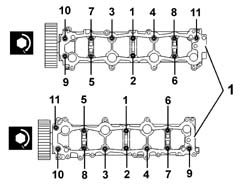
Applies to: all engines; all production periods
1. Check that the diameter of the camshaft supports corresponds to the recommended figures; if not, replace the cylinder head.
Camshaft support diameter (mm) | Validity |
- |
Inlet outer diameter (mm) | Validity |
- |
Exhaust outer diameter (mm) | Validity |
- |
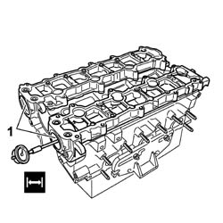
Applies to: all engines; all production periods
- Measure the valve guide bore and check that it is within the recommended values.
- If necessary, ream the valve seat.
- Check the measurement of the new valve guide.
- Check the measurement of the new valve guide. - Make a note of the measurement of the valve seat after reaming.
- Valve guides are available as spares with the following diameters.
Valve guide bore diameter in cylinder head (mm) | Validity |
9.959 ÷ 9.989 |
- The interference between the valve guides and the seats in the cylinder head is as follows.
Valve guide outer diameter (mm) | Validity |
- ÷ - |
- Before fitting the new valve guides the cylinder head must be heated to a temperature of around 80° - 100 °C.
1. Fit the new valve guides (1a) using the tool (1b).
Valve guides - valve guide seats interference (mm) | Validity |
- ÷ - |
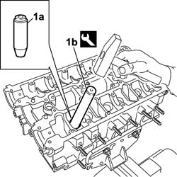
Applies to: all engines; all production periods
- If the valve guides have become slightly distorted during fitting, ream the inner surface using a suitable sized diameter reamer.
- Measure the valve guide inner diameter after refacing and the clearance with the valve; check that it is within the recommended values.
Description | Code | Function | |
|---|---|---|---|
1b | Fitting tool | 1.870.891.000 | Valve guide fitting |
Valve guide inner diameter (mm) | Validity |
- ÷ - |
- Grind the valve seats if the valves and the valve guides are being replaced.
Inlet and exhaust valves - valve guides clearance (mm) | Validity |
- ÷ - |
Upper band taper "a" (mm) | Validity |
± |
Contact band taper "b" with valve (mm) | Validity |
- |
Lower band taper "c" (mm) | Validity |
- |
Contact band width "I" with valve (mm) | Validity |
~ |
- When the operation is completed, clean the valve seats thoroughly.
- Fit the cylinder head on the support tools and fasten it using the nuts.
- Fit the valve spring lower plate.
- Fit the valve spring lower plate.1. Place the oil seal on the valve guides (1a) positioning the drift (1b) on the valve stem temporarily inserted in its housing.
Description | Code | Function | |
|---|---|---|---|
1b | Tool for fitting camshaft oil seal | 1.870.892.000 | Tool for fitting oil seal |
Description | Code | Function | |
|---|---|---|---|
2 | Fitting tool | 1.870.891.000 | Fitting oil seal |
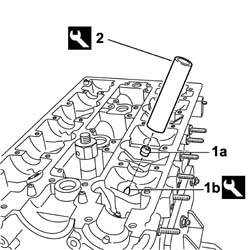
Applies to: all engines; all production periods
1. Fit the valves (1a) for the cylinder in question and support it using the tools (1b) and (1c).
Description | Code | Function | |
|---|---|---|---|
1b | Valve retaining base | 1.860.786.000 | - |
Description | Code | Function | |
|---|---|---|---|
1c | Extension | 1.860.787.000 | - |
2. Fit the valve spring.
3. Fit the upper valve shims.
4. Fit the cotters (4a) using the tools (4b), (4c), and (4d).
Description | Code | Function | |
|---|---|---|---|
4b | Lever hook | 1.860.788.000 | - |
Description | Code | Function | |
|---|---|---|---|
4c | Chamber | 1.870.890.000 | Lower tappets |
Description | Code | Function | |
|---|---|---|---|
4d | Lever | 1.860.790.00 | - |
- Carry out the same operations to refit the remaining valves.
- Remove the tools used for fitting the valves.
Applies to: all engines; all production periods
1. Fit the hydraulic tappets.
2. Fit the camshafts.
3. Check that the centering pins for the camshaft cover single covers are present.
4. Apply a bead of sealant continuously to the contact surface with the camshaft single covers.
5. Position the camshaft cap single covers (5a) using the fixing bolts (5b).
Component | Type | Description | Classification | Quantity | Validity |
|---|---|---|---|---|---|
CAMSHAFT CAPS | Sealant | - | - | - | - |
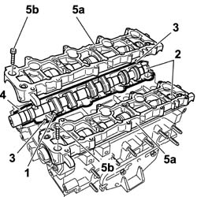
Applies to: all engines; all production periods
1. Tighten the bolts fixing the camshaft cap single covers, following the procedure described below and following the tightening order illustrated in the diagram for each stage (different for the left and right sides).
- Pre-tighten the bolts fixing the single covers with a camshaft cam function to the value given in the table.
Value daNm | Fastening | Component | Ø | |
|---|---|---|---|---|
(Pre-tightening) 0.2 | Bolt | TAPPET COVERS | M |
- Tighten the bolts fixing the single covers with a camshaft cap function to the recommended torque.
Value daNm | Fastening | Component | Ø | |
|---|---|---|---|---|
(-) 1 | Bolt | TAPPET COVERS | M |
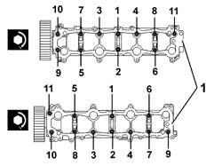
Applies to: all engines; all production periods
1. Fit the camshaft front oil seals (1a) using the tool (1b).
Description | Code | Function | |
|---|---|---|---|
Tool for fitting camshaft oil seal | 1.870.892.000 | Tool for fitting oil seal |
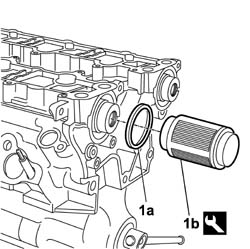
Applies to: all engines; all production periods
- Fit the timing belt rear guard and secure it using the bolts.
1. Position the inlet side camshaft pulley (1a) inserting the centering pin (1b), in the pulley, in the splining (1c) in the camshaft; bear in mind that the pulley should be fitted with the reference (1d) facing the outside of the engine.
2. Screw in the bolt fixing the inlet side pulley to the camshaft without tightening it.
3. Position the exhaust side camshaft pulley (3a) inserting the centering key (3b), in the pulley, in the splining (3c) in the camshaft; bear in mind that the pulley should be fitted with the reference (3d) facing the inside of the engine.
4. Screw in the bolt fixing the exhaust side pulley to the camshaft without tightening it.
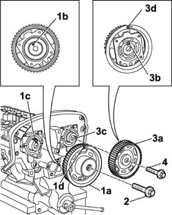
Applies to: all engines; all production periods
1. Rotate the camshaft pullies so that the opening (1a) in the actual pulley is aligned with the opening in the head; insert the retaining/timing pins (1b) through the openings.
Description | Code | Function | |
|---|---|---|---|
2b | Reaction/timing pins | 1.870.893.000 | Camshaft pullies retainer |
2. Tighten the bolts (2a) fixing the inlet and exhaust side camshaft pullies to torque using the special angular tightening tool (2b).
Value daNm | Fastening | Component | Ø | |
|---|---|---|---|---|
2a | (exhaust side) 2 + 57° | Bolt | TIMING DRIVEN PULLIES | M |
Value daNm | Fastening | Component | Ø | |
|---|---|---|---|---|
2a, | (inlet side) 2 + 57° | Bolt | TIMING DRIVEN PULLIES | M |
Description | Code | Function | |
|---|---|---|---|
2b | Torque wrench | 1.860.942.000 | Angular tightening |
3. Tighten the plugs for the inlet and exhaust side camshaft pulley.
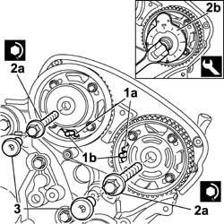
Applies to: all engines; all production periods
- Undo the fixing nuts and remove the cylinder head support.